Blog
Field dispatches and notes on new papers.
-

Paleobotany of the Potomac Group
November 27, 2026 -
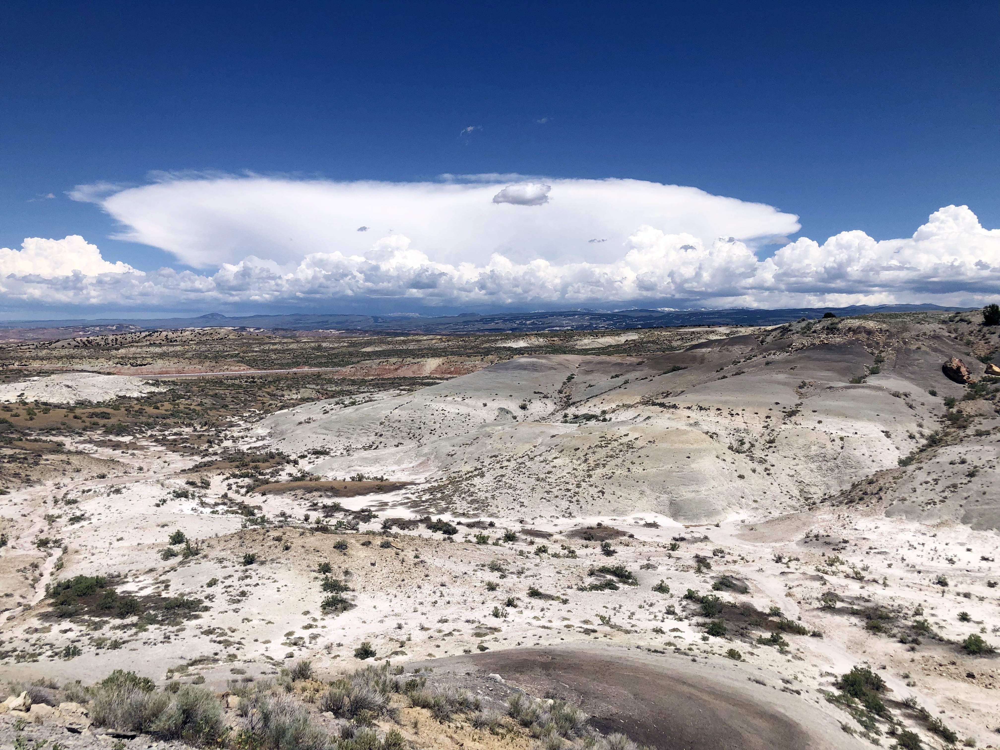
Thoughts on the age of the cycadophytes
November 15, 2026 -
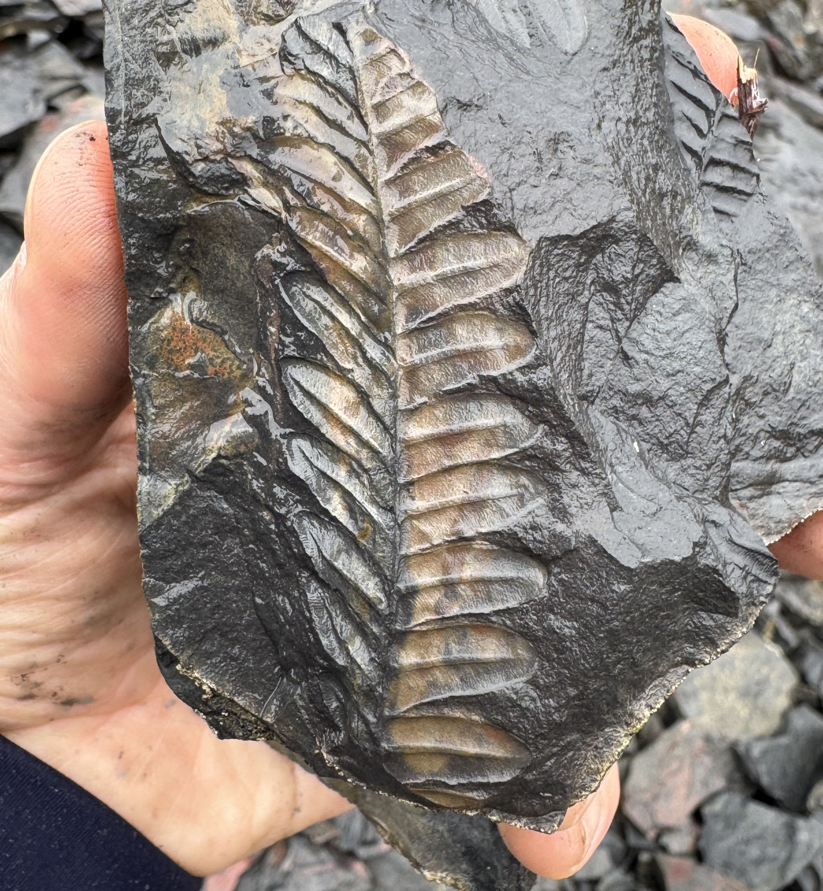
Medullosan seed ferns
November 9, 2026 -
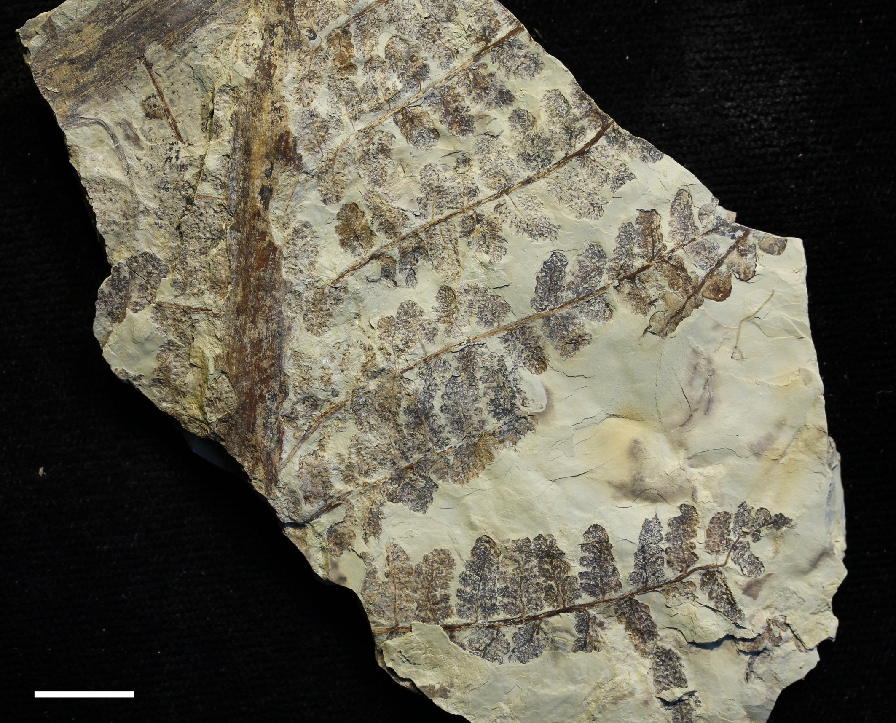
Marattialean tree ferns
April 21, 2026 -
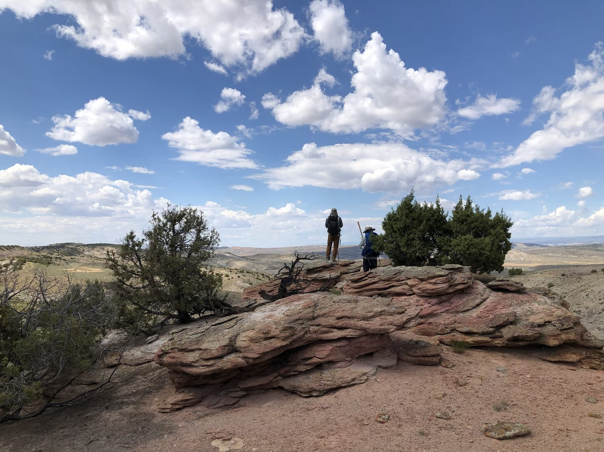
2021 Dispatch from the field #4
July 15, 2021 -
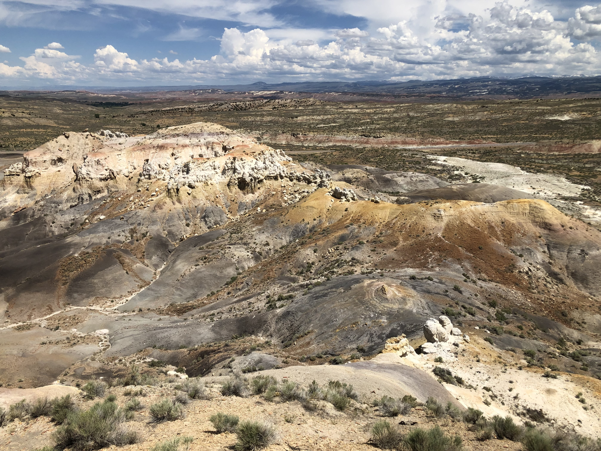
2021 Dispatch from the field #3
July 10, 2021 -
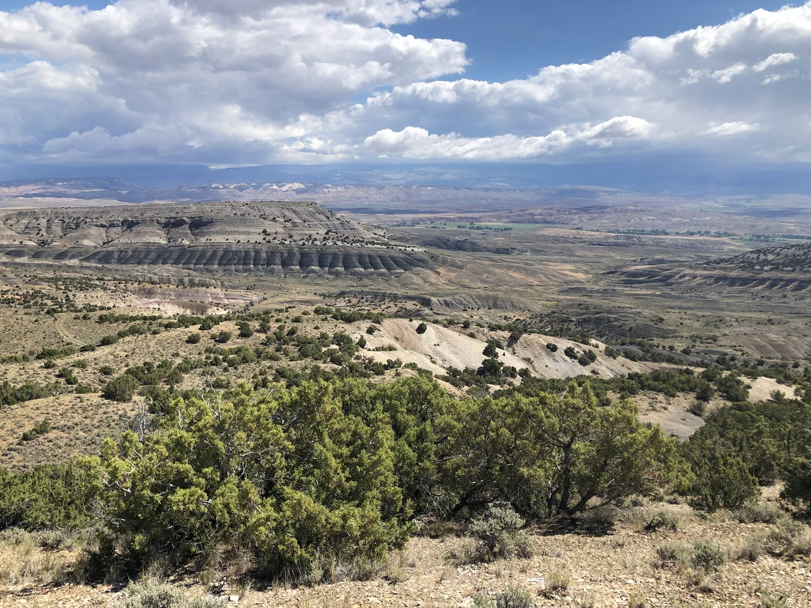
2021 Dispatch from the field #2
July 3, 2021 -

2021 Dispatch from the field #1
July 2, 2021 -
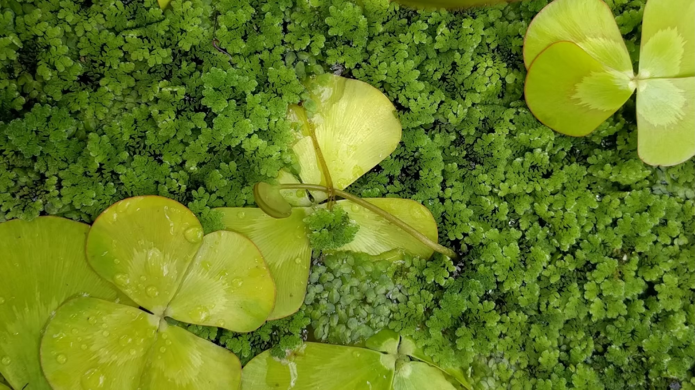
Two new species of aquatic ferns
July 22, 2019 -

More flowers from the early Paleocene of Patagonia
January 5, 2018 -

Fossil Rhamnaceae flowers from Patagonia
July 27, 2017 -
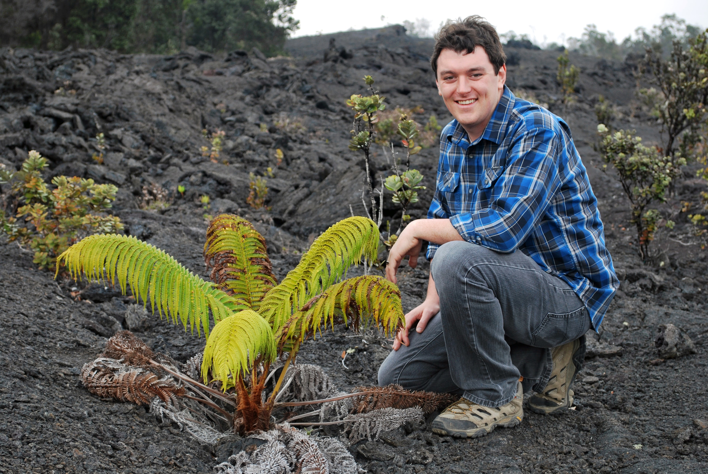
Volcanoes National Park
February 12, 2017 -
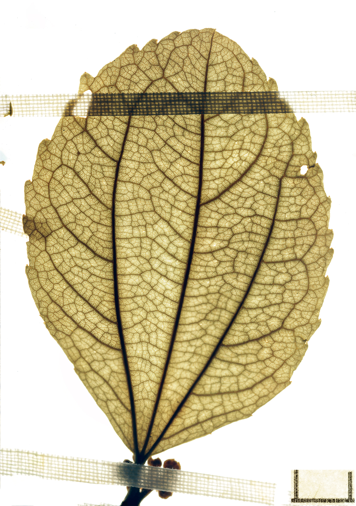
Imaging leaves on herbarium sheets
October 31, 2016 -
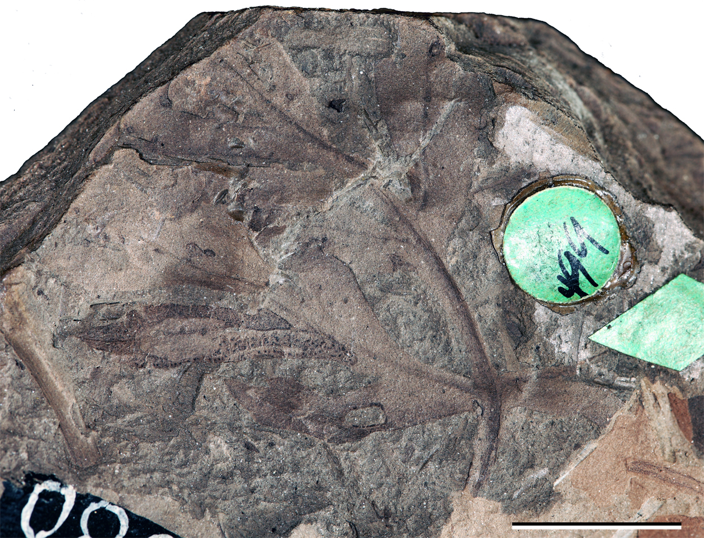
Leaf-mining flies on early flowering plants
October 29, 2016 -
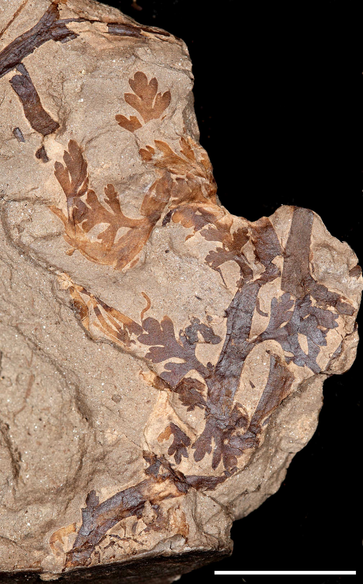
Early angiosperms in museum collections
September 15, 2015 -
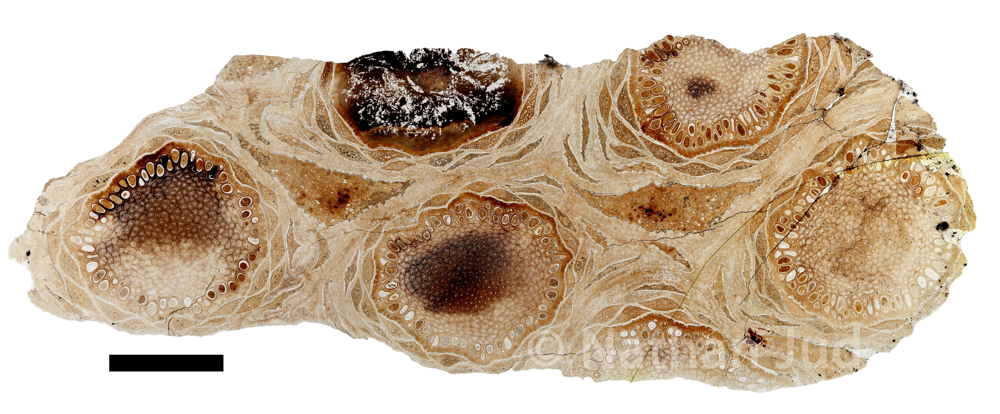
Inside a Cycadeoidea trunk
January 29, 2012